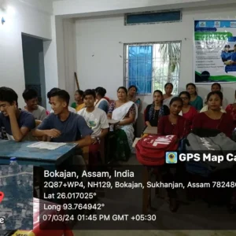
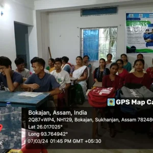

Quick Service Restaurant - Empowering Skills, Elevating Careers
The Quick Service Restaurant (QSR) upskilling and job provision project by Jubilant Bharti represents a dynamic effort to empower youth and address unemployment challenges. Through this initiative, Jubilant Bharti aims to equip young individuals with essential skills needed to thrive in the QSR industry, thereby enhancing their employability. Team Triguna offering training programs tailored to the demands of the sector, the project not only provides avenues for career advancement but also meets the growing staffing needs. Through this dual approach of skill development and job creation, the project serves as a catalyst for socio-economic empowerment, fostering a skilled workforce and contributing to community development.
 

Building Digital Identity: LinkedIn for Youth
An online training program for youth focused on creating impactful LinkedIn profiles and unlocking the platform’s potential. This initiative, spearheaded by LinkedIn in collaboration with Aspire for Her and Team Triguna. it aims to equip young individuals with the essential skills and insights needed to leverage LinkedIn effectively for personal and professional growth. Through comprehensive tutorials and practical guidance, participants learn the art of crafting compelling profiles that showcase their unique skills, experiences, and aspirations. Moreover, the training delve into the nuances of networking, job hunting, and brand building on LinkedIn, empowering youth to harness the platform’s vast resources for career advancement and opportunities. By demystifying LinkedIn and highlighting its myriad benefits, this program paves the way for youth to navigate the digital landscape with confidence and competence, setting the stage for success in today’s competitive professional world.
Entrepreneurship Development Programme (EDP)
CSR initiative of B-able Foundation – Triguna in partnership with B-ABLE Foundation for working in the field of skilling young minds about Entrepreneurship development skills by developing short online courses on the Entrepreneurship Development Programme (EDP). Such kind of course will help in clarifying the candidates about the unknowing approach of Entrepreneurial skills. Till date Triguna has impacted 2K students and trained on EDP courses accredited by National Skill Development Corporation.
Tata Play DTH Training program CSR initiative of Tata Play in partnership with B-ABLE Foundation.
DTH Technician Training aims to up skill youth and school dropout. It aims to Enhance an individual’s skill development capacity by enhancing training capabilities, stakeholder capacities, and financial capacities across India. The DTH technician training initiatives will harness inclusivity and reduce divisions such as rural/urban, organized/unorganized employment, traditional/contemporary workplace, and inclusion of various disadvantaged groups. DTH technician training initiatives support the supply of skilled workers who are trained in market-driven and industry-relevant courses. Triguna have being successfully up skilled 100+ youth in state of Assam and Maharashtra.